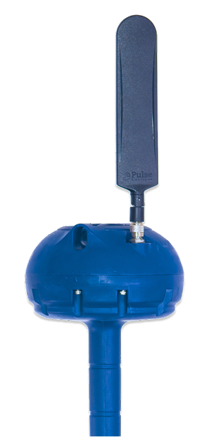
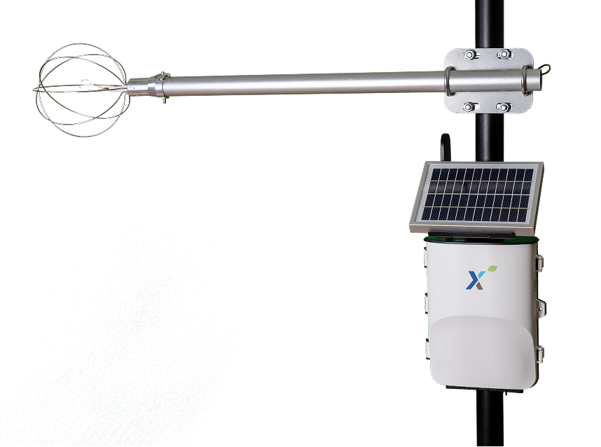
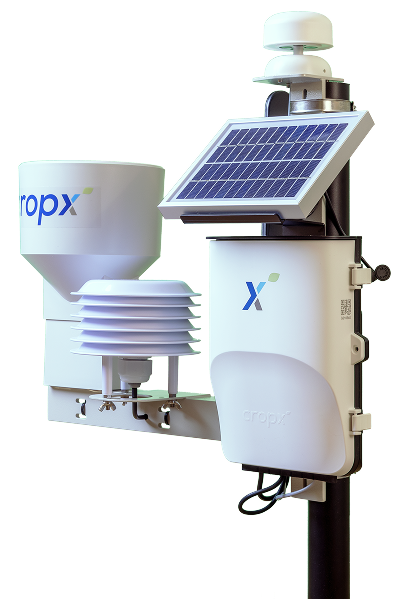
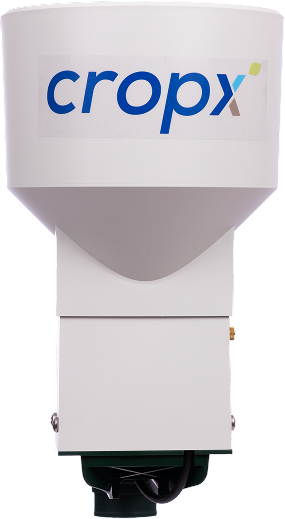
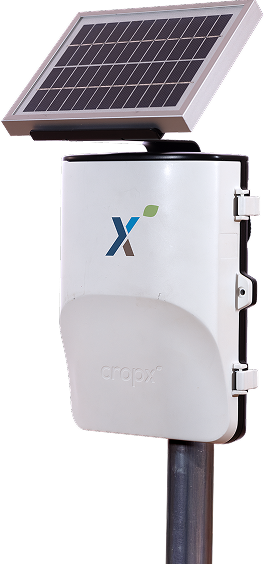
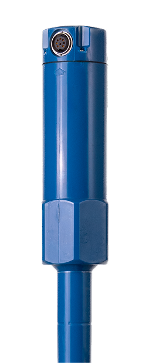

CropX Hardware Lineup
Vertex 4
All-in-one smart soil sensor

Evato 1
Actual ET sensor

Strato 1
All-in-one weather station

Rivo 1
Rain gauge

Telemetry 2
Field data gateway

Apex 1
Precision soil sensor
